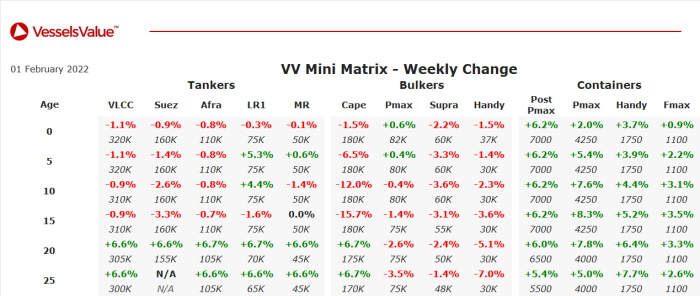

Tanker:Modern LR1 and older tanker values have firmed.
LR1s STI Exceed, STI Excel, STI Excellence, STI Excelsior, STI Executive, STI Expedite, STI Experience, STI Express, STI Precision, STI Prestige, STI Pride, STI Providence (74,000 DWT, Nov 2015 – Nov 2016, STX Offshore/SPP) sold in an en bloc deal for USD 414 mil to Hafnia, VV en bloc value USD 369.64 mil – SS Passed.
MR2s Aquila L and Arctos (50,000 DWT, Jul – Sep 2018, Hyundai Mipo) sold in an en bloc deal for USD 68.00 mil, VV en bloc value USD 69.06 mil – BWTS Fitted.
MR2 STI Fontvieille (50,000 DWT, Jul 2013, Hyundai Mipo) sold for USD 23.50 mil, VV value USD 24.72 mil.
MR2 STI Majestic (47,500 DWT, Jan 2019, Hyundai Vietnam Shipbuilding) sold to Premuda for USD 34.90 mil, VV value USD 32.32 mil – DD Due, Scrubber Fitted.
MR2 Prime Express (46,000 DWT, Nov 2010, Shin Kurushima Onishi) sold to Greek buyers for USD 16.40 mil, VV value USD 15.18 mil.
Small Chemical Tanker Celsius Manila (20,000 DWT, Mar 2002, Shin Kurushima) sold to South Korean buyers for USD 7.85 mil, VV value USD 8.34 mil – SS/DD Due, BWTS Fitted.
Bulker:Bulker values have softened.
Capesize Baosteel Elevation (206,300 DWT, Apr 2007, Imabari) sold to Greek buyers for USD 19.00 mil, VV value USD 29.02 mil – SS/DD Due.
Capesize South Trader (181,300 DWT, Jan 2014, Koyo Dock) sold to Safe Bulkers for USD 33.80 mil, VV value USD 37.67 mil – DD Passed.
Handy Bulker Cielo Di Virgin Gorda (39,200 DWT, Feb 2015, Yangfan Zhoushan) sold to Oldendorff Carriers for USD 22.75 mil, VV value USD 23.03 mil – BWTS Fitted.
Handy Bulker Ultra Tolhuaca (37,400 DWT, Jul 2015, Oshima) sold to DAO Shipping for USD 24.50 mil, VV value USD 23.80 mil – BWTS Fitted.
Handy Bulker Woori Star (28,700 DWT, May 1999, Imabari) sold to Chinese buyers for USD 7.00 mil, VV value USD 8.14 mil – DD Due.
Container:Container values have firmed.
Handy Container Kanway Galaxy (1,613 TEU, Oct 1997, Shin Kurushima Onishi) sold for USD 19.00 mil, VV value 19.41 mil.
Feedermax Songa Cougar (1,118 TEU, Oct 2008, Jinling Shipyard Jiangsu) sold for USD 21.00 mil, VV value USD 20.68 mil – DD Passed.
